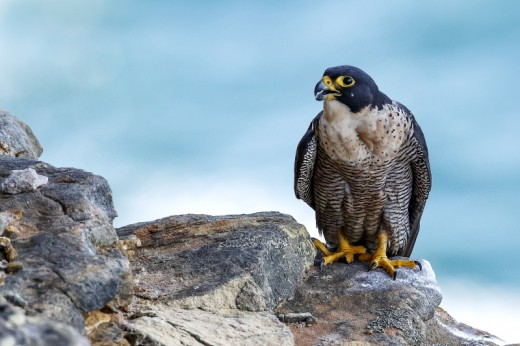

Több évtizednyi szünet után 1997-ben költött újra Magyarországon a vándorsólyom. A Magyar Madártani és Természetvédelmi Egyesület (MME) a 20 éves évfordulóra emlékezve szenteli 2018-at a világ leggyorsabb madarának – írja közleményében az egyesület.
A szédületes sebességéről széles körben ismert vándorsólyom az örvös galambnál termetesebb, erőteljes testalkatú, hegyes szárnyú ragadozó. Igazi világpolgár, a Föld szárazföldi területeinek jelentős részén fészkel vagy kóborlóként, vonulóként előfordul, a kontinensek közül egyedül az Antarktiszról hiányzik. Bárhol megtelepszik, ahol költésre alkalmas sziklafalat, közepes és nagy testű madárfajok fán épült fészkeit találja. Az egyik leggyakoribb településen fészkelő ragadozómadárként világszerte költ nagyvárosok belső kerületeinek felhőkarcolóin, magas épületein is.
A vándorsólyom a legtöbb sólyomféléhez hasonlóan a nyílt légtérben vadászik. Prédáját rendszerint a magasból indított, erőteljes szárnycsapásokkal gyorsított, akár a 320 kilométer per órás sebességet is elérő támadással kapja el vagy rúgja meg úgy, hogy az sérülten a földre zuhan. Főként repülő madarakra vadászik, a verébnél kisebb énekesektől a libákon át akár a gémekig. Leggyakoribb zsákmányát a varjú és a seregély méretű madarak teszik ki.
Óriási elterjedési területe miatt a faj pontos világállománya nehezen becsülhető, jelenleg 100-500 ezer egyedre tehető, és világviszonylatban stabilnak mondható. Az elsősorban hegyvidéken élő faj hazai állománya a Kárpátokban fészkelő állomány perempopulációjának tekinthető. Nálunk valószínűleg a történelmi időkben sem fészkelt nagy számban. Kipusztulása előtt Magyarországon a faj utolsó ismert költése 1964-ben, a Bükk-hegység egyik sziklakibúvásos kövén volt. Ezt követően több mint három évtizeden át csak kóborló egyedeket sikerült megfigyelni az országban. Egészen 1997-ig kellett várni, amíg a megerősödő európai állomány terjeszkedése elérte hazánkat, és ismét megtelepedett a vándorsólyom Magyarországon. Azóta rendszeres fészkelő, állománya folyamatosan erősödik.
2017-ben szavazás döntött az év madaráról, akkor a tengelicet választották. 2018-ra egyébként már az év hala is megvan, az a balin lett.
Forrás: index.hu